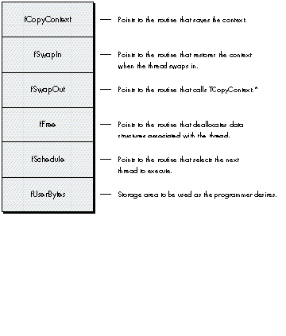
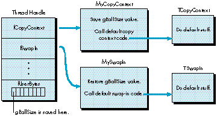

Threads are a great way to improve the performance and simplify the design of
programs. Apple's Advanced Technology Group developed a Threads Package to
implement this programming technique on the Macintosh. This article explains how
you can use this package to incorporate threads in your own code.
The idea for the Threads Package arose during the design phase of some scientific
visualization software, when we discovered that some of the applications we were
working on needed a way to juggle several simultaneous activities. It quickly became
clear that the Macintosh run-time environment posed some serious obstacles to anyone
wanting to implement threads on the Macintosh. With some effort, we were able to
come up with workarounds that made the use of threads with the Macintosh OS
relatively painless.
These workarounds are the main subject of this article. After briefly introducing the
purpose and mechanics of threads in general, the article presents some specific details
of the Macintosh threads implementation as it currently stands. A summary of the
functions in the Threads Package appears at the end of the article. The Threads Package
itself and several simple example programs can be found on the Developer Essentials
disc for this issue.
The Threads Package was developed as a means to an end, and it's by no means the last
word on threads for the Macintosh. We welcome any suggestions you may have for
improvements.
Suppose you want to write an AppleLink ®-like communications program. You'd like
to write the program so that while it's downloading a file, it can also print an existing
file and allow the user to write a new message. A typical program can perform only one
of these functions at a time, displaying the watch cursor until the task is completed.
What's needed is some technique for allowing the program to perform these tasks
concurrently.
Programmers have often tried to achieve concurrency through the use of idle procs.
For your communications program, for instance, you could write the downloading,
printing, and text entry tasks as idle procs. While the download procedure is
executing, it could regularly call a printing idle proc to send a few lines of a message
to the printer. The download procedure could also periodically call an editing
procedure to allow the user to enter text for a new message in a window.
But think of the tremendous effort involved in writing the program so that it can
switch among these tasks. Every task would have to save variables each time it returns
so that it could resume where itleft off. Most complex functions would not be able to
contain deep levels of nesting because that would make it impossible to freely return to
the caller at any time. In fact, you'd have to divide most functions into inconveniently
small chunks so that you could juggle between them. The net result is that the
modularity of your program would be destroyed, and you'd have a tremendous
programming headache on your hands.
Threads are a much better technique for achieving concurrency than idle procs. When
your program uses threads, it's like a mind that can have several trains of thought
simultaneously. A program using idle procs, in contrast, is like a mind with a single
train of thought that must constantly interrupt itself to attend to side issues.
Note that there's a difference between multithreaded programs and multitasking
systems. Multitasking is the ability to run more than one application at once, but
each application can still only do one thing at a time. In other words, concurrency is
happening at the system level. A multithreaded application performs concurrent tasks
within the same program; concurrency happens at the program level. Of course, it's
possible to have a multitasking environment in which threaded programs run.
When writing multithreaded code, you must let go of old ideas about how the machine
executes your program. Instead of a single program counter marching through your
code, in a sense you now have many. While the idea of multiple program counters may
sound complex, you don't have to relearn programming. You just need to be aware that
the main train of execution in a program is itself a thread and that all threads must
relinquish control to each other. You also have to remember to share globals and heap
objects that you used to access exclusively.
Here's a sample program that shows how simple it is to use threads. The program is a
modified version of the ever-popular SillyBalls. Unmodified, the program opens a
window and draws colored balls into it until the main event loop detects that the mouse
button is down. This new version forks a thread that beeps while the balls are being
drawn.
main()
{
ThreadHandle beepThread;
Initialize();
/* The InitThreads call initializes the Threads Package, converting
the original thread of execution into a swappable thread. */
InitThreads(nil, false);
/* This code forks a thread that beeps 30 times, and then quits. */
if (InNewThread(&beepThread, kDefaultStackSize))
{
long i;
for (i=0; i<30; i++)
{
SysBeep(120);
Yield();
}
EndThread(beepThread);
}
/* Here's the main event loop. The only change is the new call to
Yield. */
do
{
Yield();
NewBall();
} while (!Button());
/* This call to ExitThreads waits for all threads to die before
allowing
the program to terminate. */
ExitThreads();
}
The InitThreads call is made at the beginning of the program. It initializes threads and
converts the original thread into something that can be swapped by the Threads
Package. Once this call is made, you can fork other threads.
In this example, execution from the original thread enters the InNewThread procedure.
Two threads leave the procedure, but at different times. The original thread goes in and
is cloned before coming out. A new thread now exists, but it hasn't started execution
yet. InNewThread tests whether the current thread's ID is that of the new thread,
beepThread, and returns a Boolean indicating the result of this test. It's essentially
supplying an answer to the question "Am I running the new thread?" Since the original
thread is still the current thread, it returns from InNewThread with a value of false,
thus skipping over the code contained in the IF block. It continues execution by
entering the main event loop, drawing balls, and calling the Yield function. Each time it
calls Yield, it politely gives control to other threads that may want time to execute.
On the first call to Yield, the newly cloned thread returns from the call to InNewThread
with a value of true, indicating that this is the new thread and not the original. The new
thread enters the block of code associated with the IF statement and begins executing
the loop, which beeps and yields 30 times. Each call to Yield exchanges control with the
main event loop. The new thread lives out its life within the confines of the IF block.
After completing its task, it calls EndThread and dies.
The conditions for terminating these two threads are different: the beeping thread ends
after 30 iterations; the original thread ends when the user presses the mouse button.
The call to ExitThreads at the end of the program ensures that all threads have
completed before the program terminates.
With multiple threads running around in your program, it's possible for them to get
in each other's way. The Threads Package provides a semaphore mechanism to help you
manage this problem. The problem occurs when two threads compete for a resource.
Two threads that are executing at the same time may each want exclusive use of the
same device, file, or memory location.
To deal with this situation, you assign a semaphore to control access to this resource.
Then, when you write the thread that uses the resource, you always make sure that the
thread "grabs" the semaphore. After you're done with the resource, you "release" the
semaphore.
What happens if a thread tries to grab a semaphore that has already been grabbed? The
thread goes to sleep, waiting in a queue associated with the semaphore. When the
semaphore does become available, the sleeping thread wakes up with control of the
semaphore, completely unaware that it had to wait in the queue. It continues executing
code as usual, and releases the semaphore when it's done, thus giving other threads an
opportunity to use the resource.
Below is a small example program that demonstrates the behavior of semaphores. It's
very similar to the first example, except that the beeping thread grabs a semaphore
before beeping 4 times and then releases it. A call to Yield was inserted within this
inner loop just to demonstrate that even though there is a call to Yield in the loop, no
balls are drawn during this time. This is because the code that draws the balls grabs
the semaphore too. When it gets control of the semaphore, it draws 20 balls before
letting go. After you release a semaphore, you still have to call Yield before other
threads will get control.
main()
{
ThreadHandle beepThread;
SemaphoreHandle aSemaphore;
Initialize();
/* The InitThreads call initializes the Threads Package, converting
the original thread of execution into a swappable thread. */
InitThreads(nil, false);
aSemaphore = NewSemaphore();
/* Fork the beeping thread. */
if (InNewThread(&beepThread, kDefaultStackSize))
{
long i,j;
Yield();
for (i=0; i<10; i++)
{
/* Grab the semaphore, beep 4 times, and release the semaphore. */
GrabSemaphore(aSemaphore);
for (j=0; j<4; j++)
{
SysBeep(120);
Yield();
}
ReleaseSemaphore(aSemaphore);
}
EndThread(beepThread);
}
/* Here's the main event loop. */
do
{
long j;
Yield();
/* Grab the semaphore, draw 20 balls, and release the semaphore. */
GrabSemaphore(aSemaphore);
for (j=0; j<20; j++)
{
NewBall();
Yield();
}
ReleaseSemaphore(aSemaphore);
} while (!Button());
/* This call to ExitThreads waits for all threads to die before
allowing the program to terminate. */
ExitThreads();
}
After examining the ramifications of implementing threads in the Macintosh run-time
environment, we identified three serious problems:
Although the Threads Package minimizes the impact of these problems, you must still
deal with some special coding issues when writing programs that use threads.
NON-REENTRANT TOOLBOX AND APPLICATION CODE
When you develop code that uses threads, it's important to write reentrant code. This
is a fancy way of saying that your threads must not interfere with each other. A
common way in which threads do interfere with each other is in the use--or
misuse--of global variables.
The basic problem can be described as follows: Your thread is merrily running along,
and it politely yields control to the other threads. When it gets control again, the other
threads may have unexpectedly changed some global variables, causing your thread to
crash and burn, or behave in an unexpected manner.
Let's illustrate this problem with a realistic example. Suppose you want two windows
in your application, and you want to have some drawing going on in each of them
simultaneously. Naturally, you would start two threads that draw in the two respective
windows. Unfortunately, when you run the program, you find that both of the threads
end up drawing in the same window.
What happened? The first thread sets its grafPort to the grafPort of the first window.
When the first thread yields control to the second thread, the second thread changes the
grafPort to point toits window. Finally, when the first thread gets control again, the
grafPort is still pointing to the second window.
You might attempt to solve this problem by placing code that saves and restores your
grafPort before and after your call to Yield. This approach may appear to work, but
watch out! There may be other calls to the Yield function in routines that your thread
is calling. You would have to make sure your save-and-restore code surrounds every
one of these calls as well. This would be cumbersome, to say the least.
A safer solution to the reentrancy problem is simply to write reentrant code from the
beginning. In other words, just don't misuse global variables. But alas, millions of
lines of code have already been written for the Macintosh with globals galore. The
Macintosh Toolbox itself is on the whole non- reentrant. For instance, in the above
example, the grafPort global is referenced not just in the application but in the
Toolbox itself. It would be unrealistic to expect reentrancy problems in Toolbox and
application code to vanish overnight.
To get around all this, the Threads Package provides an innovation called customizable
swapping behavior. To understand how this behavior works, you must first know a
little bit about the thread structure.
The thread structure contains additional fields for the custom procedures that the
Threads Package uses to control a thread. Figure 1 illustrates these fields.
You implement the customizable swapping behavior by writing custom routines that
carefully set up a thread's globals when the thread swaps in and save these values
before the thread swaps out. You assign these routines to the fields in the thread
structure, so that the Threads Package can automatically call these routines for you
when it does the actual swapping. This enables you to getcontrol at the critical times.
Here's how the customizable swapping feature works. Normally when you create a
thread, the Threads Package assigns default swapping and context-preserving
functions to the thread. If you want to use all these defaults, just call the InNewThread
routine to launch a thread. To use customizable swapping, you create the thread object
yourself, customize it, and then launch it. Note that you must always be sure to call the
corresponding default routine from within your custom routine.

* Don't alter this pointer. In practice we've found that you don't need to override
fSwapOut.
Figure 1 Customizable Routines in the Thread Structure
Remember, you don't necessarily have to use this customizable swapping technique to
juggle all of your global variables. Some globals are really fixed values and don't
change when your program switches threads. You only have to worry about the globals
that other threads are going to change.
The following sample program demonstrates how to customize the swapping behavior
of threads. Notice that there are now two ball-drawing threads. They manage to use the
same global variable, gBallSize, to draw balls of different sizes. If we assume that this
global is used by the NewBall procedure to determine the size of the ball, and that you
don't have control over the implementation of NewBall, then you must have a way to
juggle the global's value. This example shows you how to do just that:
pascal void MyCopyContext(ThreadHandle theThread)
{
(**theThread).fUserBytes[0] = gBallSize ;
TCopyContext(theThread);
}
pascal void MySwapIn(ThreadHandle theThread)
{
gBallSize = (**theThread).fUserBytes[0] ;
TSwapIn(theThread);
}
main()
{
ThreadHandle ballThread;
ThreadHandle mainThread;
Initialize();
/* Create and customize the main thread. InitThreads will start
it. */
mainThread = NewThread(kDefaultStackSize);
(**mainThread).fCopyContext = &MyCopyContext;
(**mainThread).fSwapIn = &MySwapIn;
InitThreads(mainThread, false);
/* Create, customize, and start the ball thread. */
ballThread = NewThread(kDefaultStackSize);
(**ballThread).fCopyContext = &MyCopyContext;
(**ballThread).fSwapIn = &MySwapIn;
StartThread(ballThread);
if (InThread(ballThread))
{
long i;
gBallSize = 100;
for (i=0; i<100; i++)
{
NewBall();
Yield();
}
EndThread(ballThread);
}
/* Here's the main event loop. */
gBallSize = 20;
do
{
Yield();
NewBall();
} while (!Button());
/* This call to ExitThreads waits for all threads to die before
allowing the program to terminate. */
ExitThreads();
}
Note that this example uses procedure pointers. As always with procedure pointers,
make sure that they're A5 relative so that they can be dereferenced from another
segment. In this case, the Threads Package will be calling your procedures at the
critical moments before swapping in and swapping out. My preferred technique for
ensuring that procedure pointers are A5 relative is to put the procedure in its own
segment, separate from the routine that's generating the reference to it.
Figure 2 illustrates how we've customized the thread for the sample program above.

Figure 2 Customizing a Thread
TOOLBOX USE OF MEMORY BETWEEN THE STACK AND THE HEAP
Most threads implementations involve keeping a separate stack in the heap for each
thread. They do their context swapping by altering the stack pointer and the stack base;
the data on the stack never moves. Unfortunately, there are some routines in the
Macintosh Toolbox that assume the stack remains in the same place, not in the heap.
One of the primary design goals of the Threads Package was Toolbox compatibility, so
here's the solution we chose. It's a given that there is only one stack and all threads
must share the use of this stack. However, since a thread needs to maintain its unique
stack data and protect it from being clobbered by other threads, each thread needs to
keep this data safe when it doesn't have control of the stack. The way a thread does this
is by creating its own unique storage area in the heap. The Threads Package's
context-swapping strategy moves data between the stack and the heap with the
BlockMove instruction. As a thread swaps out, its context is moved to the heap. As a
thread swaps in, its context is moved from the heap into the application's stack area.
The context-swapping code is written in such a way that interrupts can function as
usual, and of course you can call Toolbox routines as usual. The heap storage associated
with a thread's stack can and will grow dynamically as necessary, since it's free to
move around in memory while it's not running.
Swap time using this strategy is 500 microseconds for a stack size of 256 bytes
running on an SE/30. Your mileage may vary.
You must be careful not to pass pointers to stack objects between threads, since such
pointers are not valid unless the associated thread is swapped in. One subtle way that
this problem occurs is in the use of parameter blocks associated with asynchronous
I/O. Such parameter blocks should not be allocated on the stack because the I/O
operation may complete when the wrong thread is swapped in.
SEGMENT UNLOADING
When you write threaded programs for the Macintosh, you must never unload a code
segment unless you're certain that there is no thread that has entered that code
segment and has not yet left. In some cases, you can be sure that there's no way for a
thread to yield control while it's in a specific code segment. For example, if you have
some code that does some computation that stands on its own, you can be reasonably
certain that there's no way for it to call other code that could result in a Yield. In cases
like this, it's safe to unload the segment as usual.
We looked at several mechanisms for overcoming this problem and found that the most
promising design involves unloading segments at GrowZone time. Here's how this could
work: The system could call the GrowZone routine when you need more memory in the
current heap zone. Since the whole idea behind unloading code segments is to free up
memory, we thought that this would be a good place to
unload segments. The trick is to make sure that your GrowZone routine only unloads
segments that are not needed by any thread. To ensure this, you could augment the
thread structure to include linked-list pointers that would allow your custom
GrowZone procedure to traverse a list of all threads (even sleeping threads) in one
pass. During the traversal, GrowZone would scan the stack of each thread, looking for
anything resembling a return address. If it found a return address, the associated code
segment would be "needed." When all the stacks were scanned, GrowZone would simply
unload all of the unneeded code segments.
Here's a description of all the routine and data structures provided by the Threads
Package.
THE THREAD STRUCTURE
The API functions all access a thread through its handle. The thread structure as it's
defined in the Threads.h file is as follows:
struct Thread
{
struct Thing fThing; // Linked-list stuff.
ThreadType fType; // Obsolete.
ThreadState fState;
// Running,pending,blocked,sleeping,ended.
Boolean fLocked; // Obsolete.
Handle fStack; // The storage for the stack data.
ThreadProc fCopyContext;
// Copy current context and store in fStack.
ThreadProc fSwapIn;
// Called to context-swap a thread in.
ThreadProc fSwapOut;
// Calls fSchedule, then fSwapIn on the nextThread.
ThreadProc fFree; // Called to dispose of the thread.
ScheduleProc fSchedule;
// Queue this thread (if necessary), return the next one.
long fUserBytes[8]; // For user use.
};
INITIALIZING THE THREADS PACKAGE
pascal void InitThreads(ThreadHandle mainThread, Boolean usesFPU);
This routine initializes the Threads Package. The first parameter is the handle of the
main thread, which has been customized with specific swapping behavior. If you don't
need customized swapping behavior for the main thread, pass nil. The second
parameter indicates whether you want to swap floating-point registers. If you pass a
value of true, they'll be swapped. Of course, the Threads Package is smart enough to
know that some machines don't support FPUs, in which case it ignores a value of true.
CUSTOMIZING THREADS
pascal ThreadHandle NewThread(long stackSize);
Each thread structure has a number of fields that are procedure pointers. The Threads
Package assigns default procedures to these fields when it creates a thread. You can
create a custom thread by calling NewThread and changing the values of the procedure
pointers before giving the thread a chance to run.
Here's a list of the procedure pointers that you can change in the thread structure:
ThreadProc fCopyContext;ThreadProc fSwapIn; ThreadProc fSwapOut; ThreadProc fFree; ScheduleProc fSchedule;
When you change one of these procedure pointers in the thread structure, you're
overriding the default behavior of a given thread. You will usually customize
fCopyContext and fSwapIn to save and restore globals at the appropriate moments. If
you need to deallocate data structures associated with the thread, you should override
fFree, which is called when the thread dies.
If you're using the default behavior, don't forget to call the corresponding default
procedure appropriately within your procedure. Here's a list of the default
procedures:
pascal void TCopyContext(ThreadHandle); pascal void TSwapIn(ThreadHandle); pascal void TSwapOut(ThreadHandle); pascal void TFree(ThreadHandle); pascal ThreadHandle TSchedule(ThreadHandle);
There is a handy place to store information in the thread structure, called fUserBytes.
If you store handles there, be sure to deallocate them in your override of fFree.
pascal void StartThread(ThreadHandle theThread); pascal Boolean InThread(ThreadHandle theThread);
Once you've created the thread with the call to NewThread and have customized it, you
call StartThread, which clones the current stack and saves it in the newly created
thread structure. The call to StartThread is typically followed by a call to InThread,
which returns true if the specified thread is currently running. This call is embedded
in an IF statement that you use to route the respective threads. The original thread
jumps over the code in the IF statement, while the new thread enters this body of code.
CONVENIENCE ROUTINES
pascal Boolean InNewThread(ThreadHandle* theThread,
long stackSize);
The InNewThread function combines the features of NewThread, StartThread, and
InThread. What's different about InNewThread is that it automatically launches a
thread with the default swapping behavior and doesn't give you the opportunity to
customize the thread. InNewThread returns a Boolean as does InThread, and returns a
thread handle in the theThread parameter. You must supply a value for stackSize,
which is the number of bytes initially allocated for this thread's stack. If the number
you supply is too small, the Threads Package will automatically grow the block of
memory that contains the stack. Nice, huh? So if you don't know or care what stack
size you need, just pass in 0.
pascal ThreadHandle Spawn(ThreadHandle theThread,
pascal void (*threadProc)(ThreadHandle, long),
long stackSize, long refCon);
The Spawn routine is for mutants who don't like fork semantics. You supply a thread
handle, or nil if you want an uncustomized thread. You also supply a procedure pointer
that points to a procedure containing code for the new thread to run. The new thread
dies when it returns from your procedure. You also specify a stackSize and a refCon,
which allows you to pass some context information to the new thread. The refCon field
is usually a pointer or a handle to a memory block that contains parameters you want
to pass in.
The distinguishing characteristic of spawn semantics is that the code for the new
thread is separated from the code for the original thread. Some people are more
comfortable when these things are separated, but passing parameters to initialize the
new thread is more work. With fork semantics, all of your local variables are right
there on the stack. You don't need to package them up in a record as you do with spawn
semantics.
OTHER STUFF
pascal ThreadHandle GetCurrentThread();
The GetCurrentThread function returns the handle to the currently executing thread.
pascal void Yield();
The Yield function is called to explicitly give control to other threads. Yield is called
implicitly through other routines like Sleep. (If the current thread is going to sleep,
it had better yield control to a waking thread.)
STATES OF CONSCIOUSNESS
pascal void Sleep(ThreadHandle theThread); pascal void Wake(ThreadHandle theThread); pascal void EndThread(ThreadHandle theThread);
These routines allow you to alter a thread's state of consciousness. To put a thread to
sleep, you simply call Sleep and pass it a thread handle. Usually, a thread will call
Sleep to put itself to sleep, although there are some cases where this will be done by
another thread. To wake a thread up, call Wake. To kill the thread, use EndThread.
The Threads Package provides a nearly painless way for you to implement multiple
threads of execution in your programs. All you need to learn is a handful of routines
and a slightly new way of thinking about program execution. And you can gain a lot:
easier, more intuitive program design; vastly simpler code; possible performance
boosts; and, of course, that holy grail of Macintosh programmers, increased user
satisfaction. It's a deal that's hard to refuse.
ACKNOWLEDGMENTS
I would like to thank Joe MacDougald for his Herculean contributions to the design and
implementation of the Threads Package. Without his devoted effort, the Threads
Package would not exist in its current form. Thanks to Tom Dowdy for the FPU
register-swapping feature, and numerous other improvements. Thanks also to ATG
researcher Jed Harris, who originally suggested threads as a solution to our problems.
Jed helped a great deal with design issues, and some gnarly assembly code debugging.
The swapping strategy that allows the Threads Package to be Macintosh
Toolbox-compatible was suggested by Donn Denman. Thanks to P. Nagarajan, the first
threads user. He dropped threads into his code virtually overnight, giving us valuable
input that made it possible to steer the design and implementation.
Tom Saulpaugh made significant contributions to the current design of semaphores.
Thanks, Tom. Thanks to Dave Harrison for reviewing an early version of the source
code for threads. Thanks to Mitchell Gass for documenting an earlier version of the
Threads Package. And thanks to my mentor Larry Tesler for supporting the
development of the first version of threads, and suggesting the convenience functions.
Thanks x 106 to my editor Geta Carlson. We had a blast working together on this
article, although we've never met in person. Thanks to Paul Snively for polishing the
article and championing threads in DTS. Greg Anderson, C. K. Haun, Dave Johnson, and
Dave Williams all contributed valuable suggestions that were incorporated. Thanks to
Monica Meffert, Louella Pizzuti, and Caroline Rose for making the article happen.
Finally, thanks to my managers Dave Leffler and Ron Metzker for putting up with me
while I worked on this, and for supporting what this is leading up to.
Interprocess communication (IPC) is one of the most compelling reasons why threads
are going to become increasingly important in the future. This became clear to a group
of us working in Apple's Advanced Technology Group when we observed that a client and
a server application communicating via IPC could easily get into a deadly embrace. A
client would ask the server application a question and would wait for an answer before
continuing. Unfortunately, sometimes the client would wait forever for the answer.
What happened was that the server needed to ask its own question of the client before
answering the client. However, the client was monitoring exclusively for a response to
its question and would ignore the server's question. The client needed to answer the
server's incoming question before it could get an answer to its own question. Both
client and server would be stopped dead waiting for the other to respond. In a sense, the
Threads Package exists because the problem described here was intractable without
threads. The application must be both a client and a server. It must be able to
simultaneously handle incoming questions and wait for incoming answers. Other
approaches to doing this, such as idle procs, skirted the core of the problem and led to
code complexity that was unmanageable. Idle procs push too much of the problem onto
the application programmer, who already has enough to worry about.
The threads solution is even more important now that IPC has been integrated into the
Macintosh OS in System 7.0. As more programmers will have access to IPC because of
System 7.0, they will need this elegant method of achieving concurrency.
Idle procs have traditionally been used to approach thread-like functionality. This
involves writing a piece of code to handle a particular task and installing it in a queue
of things that get called periodically. Thereafter, the flow of control pulses through the
routine, which can do some finite amount of work and then return, so that other idle
procs can get pulsed.
This approach results in several gnarly coding problems. The most serious is that the
pulsed routine, which is attempting to execute some algorithm, must return to its
caller at inopportune moments. Imagine that you're marching through a deeply nested
piece of code and you want to relinquish control when you reach a certain point. With
the pulsing approach, you must return to the caller from deep within the nested code.
You could put in a return statement, but the problem would be that when it's time to
pick up where you left off, you would have to magically jump back into the code after
the return statement on the next pulse. Obviously, this is not a simple thing to do when
you have to bypass several layers of conditionals and loops.
The magic of the Threads Package is that it allows you to avoid these problems: you can
leave a complex function and resume execution of it precisely where you left off. With
idle procs, on the other hand, you're forced to completely redesign the algorithm. You
must give the algorithm an "inside out" appearance: code that was in the most deeply
nested part of the algorithm now appears near either the top or the bottom of the
routine. You may even have to break your routine into several smaller functions that
are run in sequence. But doing these things will negate the natural top-down structure
of a routine. It's a mess.
Threads are currently in use in a product called Virtual User (APDA #M0987LL/A).
This program uses a single machine, acting as the "user," to run software tests on
many CPUs at once.
Virtual User used to wait until each test was done before starting something else on
another test machine. That was slow, because all the testing machines were waiting for
one of their siblings to finish something before getting anything to work on. Now, with
threads, the controlling machine is happily juggling separate conversations with all of
the testing machines simultaneously. The result is a dramatic boost in performance.
MICHAEL GOUGH is a designer in Apple's User Programming Group. We'd tell you
what he's up to these days, but it's so secret we'd have to kill you if we did. Before
coming to Apple, Michael worked at STX as a NASA contractor, designing scientific data
visualization systems. He is best known as the designer and implementor of CDF, a
"mini-database" that NASA uses to store data from dozens of spacecraft. Michael
developed software used by NOAA's fleet of oceanographic vessels to map the ocean
floor. He also worked as a contractor to the United Nations World Meteorological
Organization, so if you have any problems with the weather, now you know who to
blame. While he was there, he developed real-time satellite tracking and data ingest
systems for the TIROS-N, GOES, and GMS spacecraft, and conducted training and
installation in Beijing and Buenos Aires. In Beijing he used his knowledge of
electronics, computer science, math, and Scotch tape to successfully complete the
installation--just goes to show that you never quite know what the right tools for the
job are going to be. (Here at Apple, we make sure he always has plenty of office
supplies--just in case.) *
Thanks to Our Technical Reviewers C. K. Haun, Paul Snively, Dave Williams *